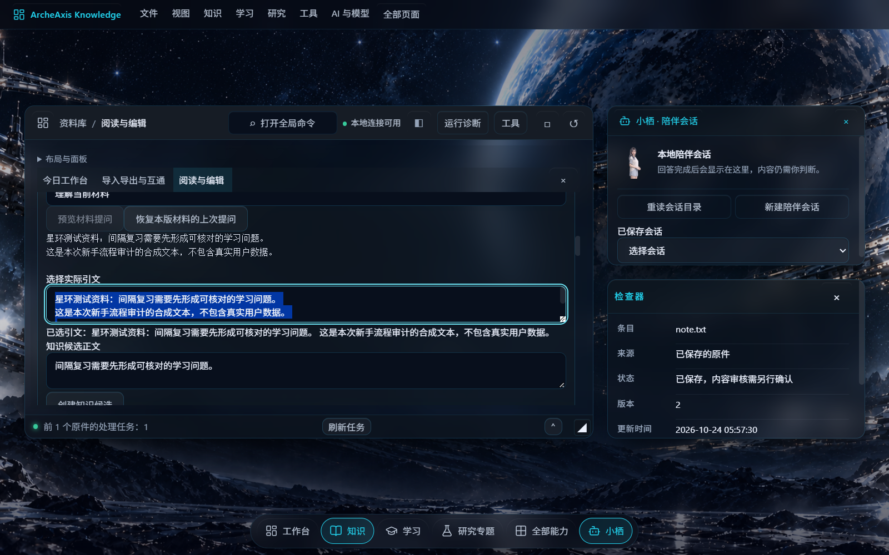
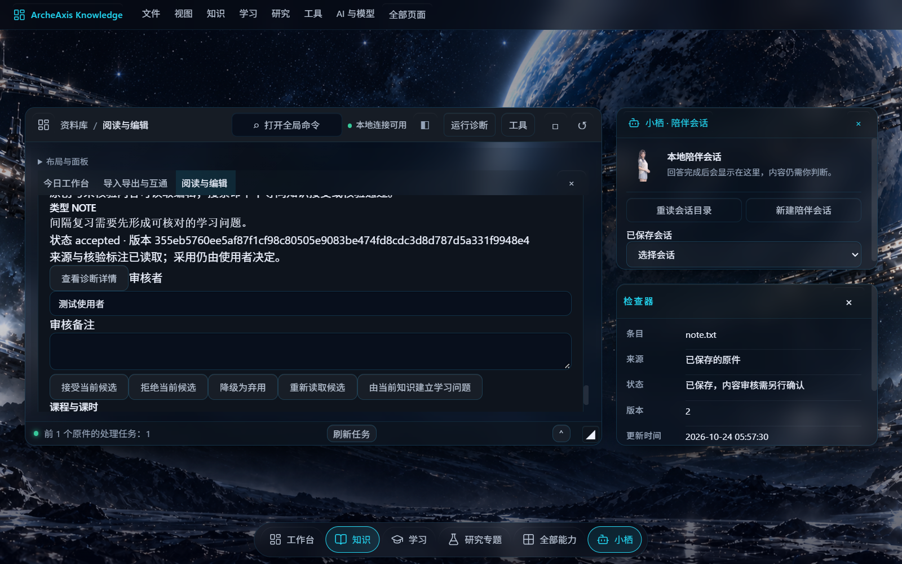
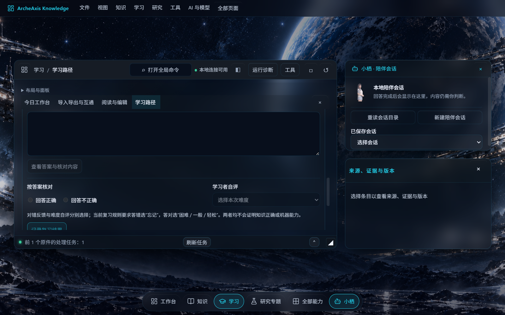
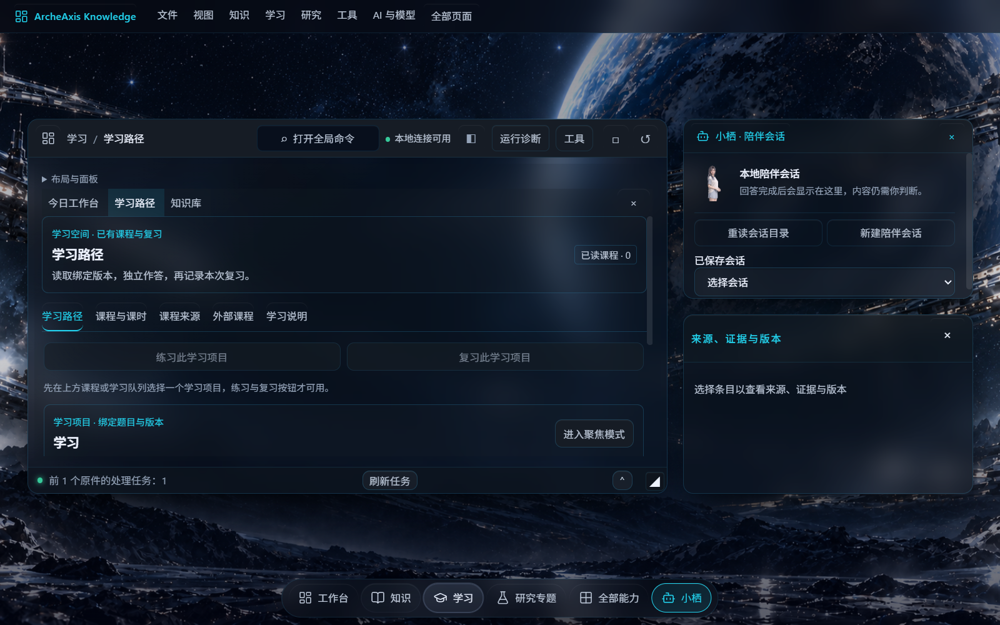
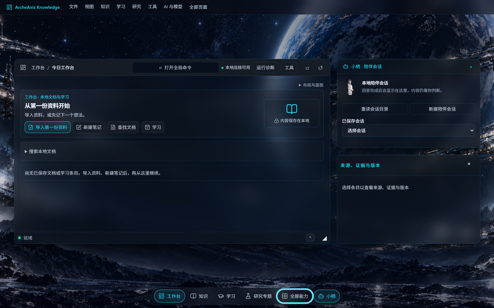
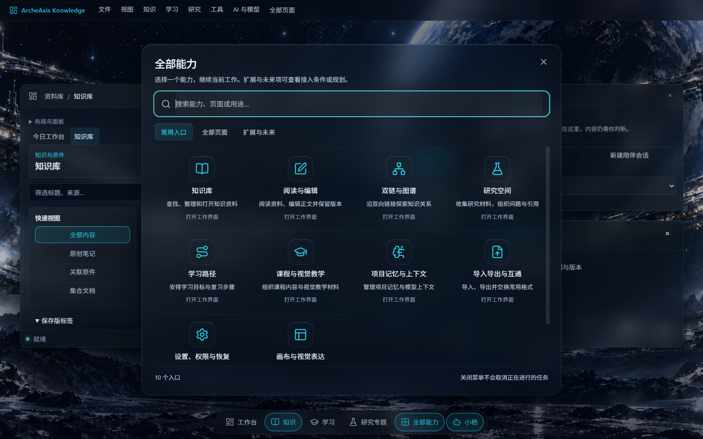
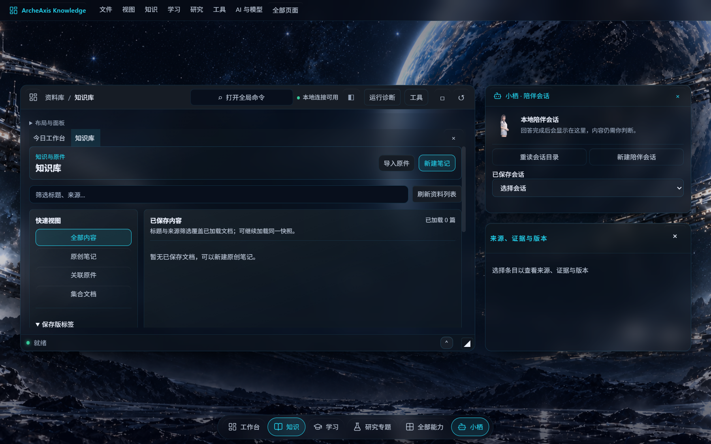
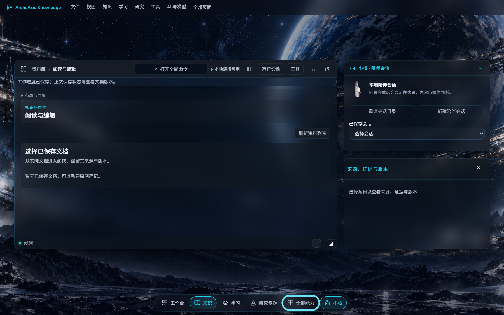

UI Flow Audit · 2026-10-24
以第一次打开产品、几乎不懂技术的用户视角，逐页走查现有 Stitch 界面：能不能找到入口、能不能走完“导入→阅读→保存→学习”，以及 Core、CAS、回执、schema 这类工程内容是否已经收进该去的位置。
页面不是“打不开”，而是新手不知道该从哪开始、到了空页面之后下一步做什么。工程内容已有统一的诊断中心、回执按钮和版本来源页，但仍有几处直接裸露在主界面上。
可以走的：工作台有清晰的“导入第一份资料”主按钮；知识库、导入导出、设置、版本来源都有真实消费者；导入、文档保存与冲突恢复、四格式阅读、文件夹批量、学习复习等分段流程已有原生回执支撑。
卡住的：首次进入时顶栏就出现“草稿尚未确认全部保存”的告警与两个恢复按钮；阅读页空状态叫你“新建笔记”却不给新建按钮；同一屏幕上并存顶部菜单、底部 Dock、启动台、页面轨道四套导航。
证据边界：本次是直接路由逐页走查，证明页面可渲染，不等于用户能从界面找到入口；也不是一条连续完成的“新用户从零到学会”真人旅程；不等于 Owner 视觉验收、安装态验收或真实模型/云端验收。
审计之后已按 P0/P1 顺序修复，并用当前 Host 重新做了原生验证。下表区分原始发现、当前已修、部分完成与仍待处理。
| 项目 | 原发现 | 当前状态 | 复验证据 |
|---|---|---|---|
| 首屏草稿告警 | 启动即显示“尚未确认全部保存” | 已修：仅在真实内容草稿、blocked、saving、错误或待恢复候选时显示 | 页面 01 原生 DOM 不再出现该告警；两次审计截图出现条件不一致，确认属启动瞬态 |
| 阅读空状态 | 提示新建笔记但没有按钮 | 已修：增加“新建原创笔记 / 去知识库选择资料” | flow-receipt 页面 03 按钮清单与实际截图 |
| 禁用按钮原因 | 研究、学习、导入禁用但无说明 | 已修：按关键词为空、未选学习项目、未选原件、无运行批次分别就地说明 | 定向组件测试 167/167 PASS |
| 工程术语裸露 | 04/14/15/21 出现 Core、CAS、IEEE754、schema、worker | 已修（主界面）：改为用户语言；原始分类/依赖仍在可展开详情 | 页面 04/14/21 文案；资源列表改用中文接入方式 |
| 导航层级 | 顶部菜单、Dock、启动台、侧栏并存 | 部分完成：侧栏分组已默认折叠；Dock 标签是“已打开视图”而非静态导航，尚未增加“关闭其他标签” | 页面 08–13 分组折叠；报告已更正原先对长列表的判断 |
| 窄窗遮挡 | 来源、证据与版本面板浮在正文右上方 | 已修：窄窗改为底部停靠，不再覆盖阅读页头部与刷新控件 | 1200×760 与更窄窗口截图 |
| 连续新手流程 | 原审计只证明页面可渲染 | 已通过：真实点击完成导入→阅读→编辑保存→知识候选→接受→学习→复习→退出→同目录重开核对，14/14 步 PASS | journey-receipt，两次正常退出均 exit 0 |
| 诊断承载 | 多个业务页有“查看诊断详情” | 已修（入口层）：可见文案统一为“状态与诊断”，仍写入唯一诊断中心；就地状态保留 | 资源页原生 DOM 与 RawReceiptButton |
连续流程使用的隔离数据目录与合成 TXT 资料：.project-local/runs/be268a2d33/ui-novice-journey-20261024-12/；回执 SHA-256 7ecba5ec…2e84（原 run-11 回执已由保留策略归档，映射见归档 SUPERSESSION）。这不是 Owner 验收，也不代表安装态、Green 或真实云端。




使用当前源码构建的可运行 Host，以隔离数据目录真实启动，通过 Tauri WebDriver 依次访问 #page=01 到 #page=22，记录每页的标题、可见按钮、空状态、页面正文与工程术语命中，并截取关键页面。
| 项目 | 实际值 |
|---|---|
| Host | .project-local/build/tauri/release/ArcheAxis.exe，47,374,848B，SHA-256 ce5e6b7f…10ec |
| WebView | Edge WebView2（真实原生，不是浏览器模拟） |
| 数据根 | 本 run 新建的隔离 portable root，未打开真实用户数据 |
| 走查回执 | .project-local/runs/be268a2d33/ui-final-walk-20261024-02/artifacts/flow-receipt.json SHA-256 b1736f4e…b392（原审计回执已由保留策略归档/取代，见归档 SUPERSESSION） |
| 启动台 | 能打开，常用入口 10 项；分类为“常用入口 / 全部页面 / 扩展与未来” |




下表全部来自真实运行 DOM。按钮数为当前页面可见的操作数量；“工程术语”只统计会显示给用户的文本。
| 页面 | 标题 | 空状态 | 可见操作 | 工程术语 | 新手判断 |
|---|---|---|---|---|---|
| 01 | 今日工作台 | 是 | 6 | — | 入口清楚；顶栏告警抢注意力 |
| 02 | 知识库 | 是 | 11 | — | 可理解；空库右侧留白过大 |
| 03 | 阅读与编辑 | 是 | 2 | — | 空态缺“新建笔记”动作 |
| 04 | 双链与图谱 | 否 | 14 | Core、投影 | 术语偏工程，需解释 |
| 05 | 研究空间 | 是 | 16 | — | 两个主按钮未选来源时禁用且无就地原因 |
| 06 | 学习路径 | 否 | 12 | — | 练习/复习入口禁用且无解释 |
| 07 | 课程与视觉教学 | 是 | 9 | — | 可理解；课程为空时引导一般 |
| 08 | 教学需求 | 是 | 17 | 诊断 | Dock 标签随访问累积，按钮密集 |
| 09 | 表达方案 | 是 | 17 | 诊断 | 同上 |
| 10 | 交付与版本 | 是 | 17 | 诊断 | “手工记录·不计分”对新手不直观 |
| 11 | 练习 / Teach-back | 是 | 19 | 诊断 | 英文混排 + 工程诊断入口 |
| 12 | 反馈与修订 | 是 | 17 | 诊断 | 按钮密集 |
| 13 | 项目记忆与上下文 | 是 | 27 | — | 27 个操作，信息过载 |
| 14 | 纠正、评测与复测 | 是 | 21 | Core | “Core 根据可信调用身份拒绝机器冒充人”需改写 |
| 15 | 资源与扩展 | 否 | 40 | Core、schema、worker、诊断、原始 | 一屏 40 个按钮，术语最多 |
| 16 | 导入导出与互通 | 否 | 11 | — | 主流程页；未选原件时按钮禁用无提示 |
| 17 | 全部能力与未来蓝图 | 是 | 26 | 诊断 | 信息面，尚可 |
| 18 | 能力详情 | 是 | 26 | 诊断 | 启动台不直接列此项，只能从能力进入 |
| 19 | 设置、权限与恢复 | 否 | 6 | — | 工程内容应集中在这里 |
| 20 | 版本、来源与历史 | 是 | 5 | — | “查看诊断详情：运行版本详细信息”重复入口 |
| 21 | 画布与视觉表达 | 否 | 16 | CAS、NOT_EXECUTED | 原始状态直接进入正文 |
| 22 | 任务与记录 | 是 | 12 | 回执 | 回执/检查点术语集中，位置合理 |
在全新隔离数据根启动，顶栏仍出现告警文案与“核对工作状态 / 重试保存工作草稿”两个按钮。新手会认为产品出错或自己的内容没保存，但它实际来自页面位置等工作场景记账。
页面只有“布局与面板”“刷新资料列表”两个操作。新手照着提示“新建原创笔记”会找不到入口，只能猜着回到知识库。
顶部菜单、底部 Dock、启动台、侧栏页面导航四套入口同时存在，页面内的 Dock 标签还会随访问的页面累积；自动走查从 01 走到 08 时标签条已经排到 6 项，继续走会越来越长。新手不知道哪一套才是“主入口”。
研究页“检索公开资料 / 导出研究快照”、学习页“练习此学习项目 / 复习此学习项目”、导入页“读取所选原件 / 停止”都禁用，但页面上没有紧邻的“先选择一项”提示。
双链页出现“计算、过滤和分页由 Core 读取已保存版本、IEEE754 f64”；评测页出现“Core 根据可信调用身份拒绝机器冒充人”；画布页出现“外部引擎资格：NOT_EXECUTED、Source CAS”；资源页出现 DIRECT_DEPENDENCY、PYTHON_WORKER、schema。
页面 08、15、17、18、20 都能看到诊断入口。诊断中心本身是统一承载组件，但入口散落在业务页里，反而像每页都有“另一个后台”。
现有产品已经有正确的承载位置：诊断中心（统一诊断）、任务与记录（回执/检查点）、版本、来源与历史（版本/来源）、资源与扩展（依赖与能力状态）。问题不是“没有地方放”，而是有些内容没有放进这些地方，以及入口重复。
| 工程内容 | 当前出现位置 | 应收敛到 | 处理 |
|---|---|---|---|
| Core / CAS / IEEE754 / schema / worker / NOT_EXECUTED | 页面 04、14、15、21 正文 | 能力详情 / 资源与扩展 / 诊断详情 | 主页面改用户语言，原始术语进详情 |
| 回执 / 检查点 | 页面 22（合理）、页面 08–13 的按钮 | 任务与记录（22） | 业务页只留状态摘要 |
| 诊断详情入口 | 页面 08、15、17、18、20 + 顶栏 | 设置/19 或顶栏状态菜单 | 只保留一个一级入口 |
| 版本 / 来源 / 证据 / 原文 | 页面 02、03、20 与右侧来源窗口 | 版本、来源与历史（20）+ 阅读页来源窗 | 统一术语，其他页面不重复展开 |
| 依赖 / 参考实现 / 许可 | 页面 15 | 资源与扩展（15） | 位置正确，但需要折叠与搜索，不要一屏铺开 |
| 工作草稿状态 | 全局顶栏 | 设置页状态或真实草稿时的局部提示 | 无真实草稿时不显示 |
说明：页面 15/17/18/22 本身就是工程/能力面，术语出现在那里是合理的；上表针对的是“出现在主流程页面”和“入口重复”两类问题。